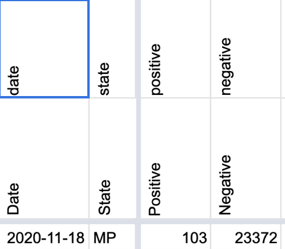
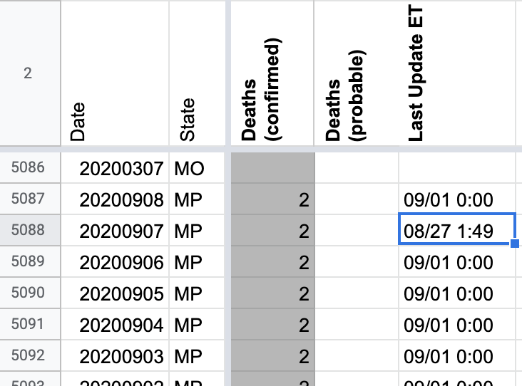
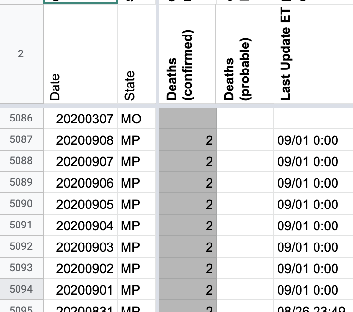
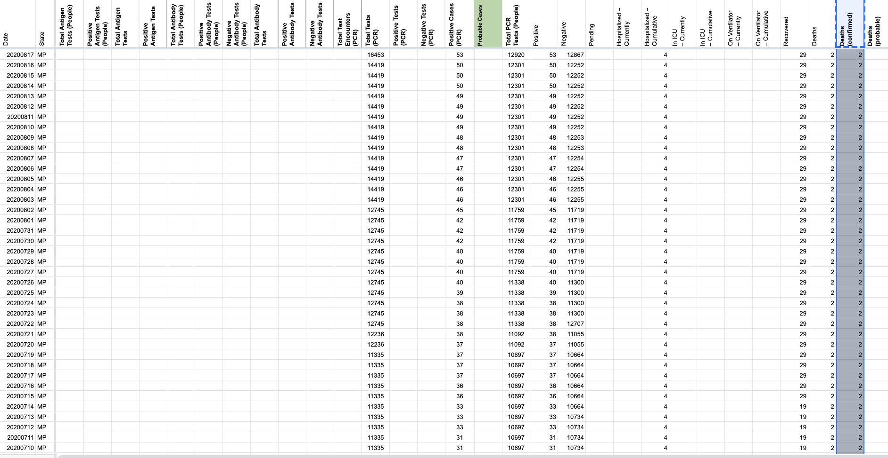
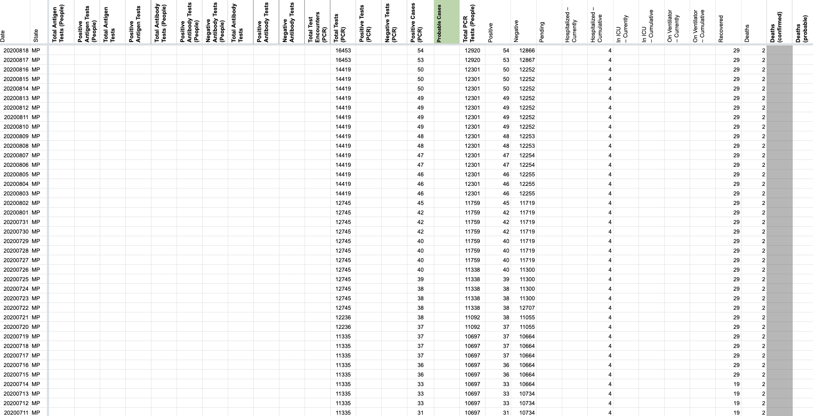
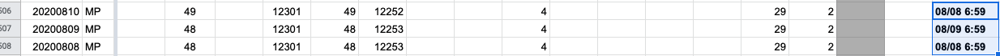
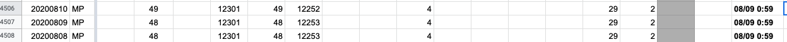

| Date | Number | Title |
|---|---|---|
| March 5, 2021, 12:43 PM PST | 1132 | [MP]Carry over missing number on 05-17-20 |
| March 5, 2021, 12:43 PM PST | 1132 | [MP]Carry over missing number on 05-17-20 |
| November 19, 2020, 1:59 PM PST | 963 | [MP] Patch 11/18 Neg. PCR tests (people) |
| September 8, 2020, 1:33 PM PDT | 818 | [MP] Fix 9/7 Timestamp |
| August 30, 2020, 2:20 PM PDT | 805 | [MP] Negative (People or Cases) for 8/29 needs to be edited |
| August 18, 2020, 8:39 PM PDT | 774 | [MP] Remove unclear deaths from confirmed deaths column |
| August 10, 2020, 12:50 PM PDT | 746 | [MP] 8/08-10 Timestamp |
| July 31, 2020, 7:05 AM PDT | 709 | [MP] Historical PCL Cases |
| July 23, 2020, 2:15 PM PDT | 666 | [MP] Switch to People Tested in Calculations |
| July 14, 2020, 1:28 PM PDT | 627 | [MP] MP started publishing both specimens and total tested people |
#1132: [MP]Carry over missing number on 05-17-20
Issue number 1132
muamichali opened this issue on March 5, 2021, 12:43 PM PST
Labels Data quality not stale
State or US: [State name, or "US" if this is an issue with country-wide data]
Describe the problem A clear and concise description of what the data problem is.
Link to data source
Provide links to original data sources that we can refer to, like a state COVID website.

Comments
I made the update today. Rows edited: 1 MP 2020-05-17 totalTestsViral: 3339 (was None)
#1132: [MP]Carry over missing number on 05-17-20
Issue number 1132
muamichali opened this issue on March 5, 2021, 12:43 PM PST
Labels Data quality not stale
State or US: [State name, or "US" if this is an issue with country-wide data]
Describe the problem A clear and concise description of what the data problem is.
Link to data source
Provide links to original data sources that we can refer to, like a state COVID website.
Comments
This issue has been automatically marked as stale because it has not had recent activity. It will be closed if no further activity occurs. Thank you for your contributions!
I made the update today. Rows edited: 1 MP 2020-05-17 totalTestsViral: 3339 (was None)
#963: [MP] Patch 11/18 Neg. PCR tests (people)
Issue number 963
hmhoffman opened this issue on November 19, 2020, 1:59 PM PST
State: MP
Dates affected: 11/18
Describe the issue: On 11/18, we calculated Negative PCR tests (people) for MP as =Total PCR tests (specimens) - Positive PCR tests (people), but should have calculated it as =Total PCR tests (people) - Positive PCR tests (people).
Comments
BEFORE: 
AFTER:
#818: [MP] Fix 9/7 Timestamp
Issue number 818
hmhoffman opened this issue on September 8, 2020, 1:33 PM PDT
State: MP Dates impacted: 9/7 Issue described: The week of 9/1 the MP dashboard was broken for a few days. As a result we got data (including a timestamp) from queries. The 9/1 0:00 source note from the queries turned out to be more of a site updated time vs a data "as of" timestamp. However we decided to carry over the 9/1 timestamp until the dashboard is updated, on 9/7 the timestamp was accidentally changed and should be patched to 9/1 0:00 Sources: https://covid-tracking.slack.com/archives/CUQ4MMTPD/p1599594076151900
Comments
Before: 
After: 
#805: [MP] Negative (People or Cases) for 8/29 needs to be edited
Issue number 805
whobody opened this issue on August 30, 2020, 2:20 PM PDT
Labels Data quality not stale
State or US: [State name, or "US" if this is an issue with country-wide data] MP
Describe the problem
MP (who updates infrequently) had new testing values on 8/27 (13540) and then new case values (specifically confirmed) on 8/29 (56). Because the testing did not update on 8/29 the checker did not update the value. So we had an incorrect negative value.
It was: =13540-54"
It should have been: =13540-56
The change needs to be made for 8/29 only.
Link to data source
https://cnmichcc.maps.arcgis.com/apps/opsdashboard/index.html#/4061b674fc964efe84f7774b7979d2b5
Comments
#774: [MP] Remove unclear deaths from confirmed deaths column
Issue number 774
whobody opened this issue on August 18, 2020, 8:39 PM PDT
Labels Data quality Historical Data PCL/SVP Historicals
State or US: Northern Mariana Islands
Describe the problem Unclear deaths being reported in the confirmed deaths column. Data will need to be removed from States Daily, WS2 should be corrected via States Matrix.
Link to data source https://cnmichcc.maps.arcgis.com/apps/opsdashboard/index.html#/4061b674fc964efe84f7774b7979d2b5
Comments
Source notes were edited accordingly. Death counts were deleted from the Deaths (confirmed) column in States Daily.
Before:  After: 
#746: [MP] 8/08-10 Timestamp
Issue number 746
brianskli opened this issue on August 10, 2020, 12:50 PM PDT
Labels Historical Data
State or US: Northern Mariana Islands
Describe the problem The 8/08-10 input should have a timestamp of 8/09 00:59
Link to data source https://cnmichcc.maps.arcgis.com/apps/opsdashboard/index.html#/4061b674fc964efe84f7774b7979d2b5
Comments
Using the screenshots history and time conversion, the timestamps were edited.
Before:  After: 
#709: [MP] Historical PCL Cases
Issue number 709
jesseandersonumd opened this issue on July 31, 2020, 7:05 AM PDT
Labels Backfill Historical Data not stale
State: MP
Dates impacted: 3/16-5/02
Issue: We may be able to reasonably backfill positive cases (PCR) here by copying over the positive cases (people, confirmed and probable) over prior to 5/02, which is when we started reporting positive cases (PCR). We have confirmed that MP reports lab-confirmed cases.
Comments
This issue has been automatically marked as stale because it has not had recent activity. It will be closed if no further activity occurs. Thank you for your contributions!
This issue has been closed because it was stale for 15 days, and there was no further activity on it for 10 days. You can feel free to re-open it if the issue is important, and label it as "not stale."
#666: [MP] Switch to People Tested in Calculations
Issue number 666
brianskli opened this issue on July 23, 2020, 2:15 PM PDT
Labels Historical Data PCL/SVP Historicals
State or US: Northern Mariana Islands
Describe the problem On 7/9, MP began to report both people and individuals tested. As of July 23rd, we are using the people-wise test totals as the default unit. This caused a perceived drop in the number of tests on 7/23.
Link to data source https://cnmichcc.maps.arcgis.com/apps/opsdashboard/index.html#/4061b674fc964efe84f7774b7979d2b5 and Screenshots (secondary)
Comments
Duplicate of #627
#627: [MP] MP started publishing both specimens and total tested people
Issue number 627
space-buzzer opened this issue on July 14, 2020, 1:28 PM PDT
Labels Data quality not stale
Plus, they now have a nice ArcGIS dashboard: https://cnmichcc.maps.arcgis.com/apps/opsdashboard/index.html#/4061b674fc964efe84f7774b7979d2b5
And a time series to back it: https://services8.arcgis.com/zkkZCub5I6ydvXQj/ArcGIS/rest/services/Coronavirus_PublicDashboardView/FeatureServer/3
There are only 3 values for Total People Tested, it looks to be a weekly metric. Their testing numbers are also lagging, but they carry over the values.
Comments
Worksheet: https://docs.google.com/spreadsheets/d/1U1MLiRLWjv54BfEceoEpJuEQvtACuhOTTRJK4XIbZj8/edit#gid=1467795880 Updated testing numbers look good, the overall is not different then what we've been capturing, but the curve is smoother now. Total tested people, looks like it's updated ~weekly, there are only 3 values. It makes negatives calculation hard
This issue has been automatically marked as stale because it has not had recent activity. It will be closed if no further activity occurs. Thank you for your contributions!
This issue has been closed because it was stale for 15 days, and there was no further activity on it for 10 days. You can feel free to re-open it if the issue is important, and label it as "not stale."
This issue has been automatically marked as stale because it has not had recent activity. It will be closed if no further activity occurs. Thank you for your contributions!